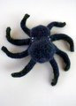

|
||
Premium Patterns Wintry Mix Mitts Love Bytes HawkeyeFree Patterns Kiddie Cadet Summerlin Ruffled Scarf Seamless DS Sock Simply Seamless Pouch Myriads of MushroomsExtras DIY Mitten Blocker Felt Patch Tutorial Yarn Dyeing Tutorial Needle Pouches Knitting Journal |
July 10, 2008 - Posted by Alice SchneblyWee OctopusProject Specs
A couple days ago I finally got the time to sit down and knit; it had literally been a month since I touched my knitting needles and I really got the urge to knit something at that very moment. Grace told me about the Octopus Knitalong in the Hansigurumi Group on Ravelry so I decided to give that a go. First, I couldn’t find a full set of DPNs in the right size to use worsted weight yarn so I picked out some yarn to use with the one set I could find—size 2s. I ended up using some Ultra Alpaca Light leftover from my Fiddlehead Mittens, which was pretty much the first yarn I could find. I don’t know what I was thinking because I picked the darkest color possible for the MC, and a pretty dark green for the CC. I knit the mantle portion of the pattern first and then moved onto the tentacles. At about the third tentacle in I decided to seam up the ones I’d already made. This is when I realized that my yarn choice probably wasn’t the right one. The dark colors paired with the fuzziness of the alpaca made it nearly impossible to see the stitches, a problem that also made it very difficult to pick up stitches to close off the underbelly and attach the tentacles together. I also hated my boring color combo. It’s totally not my style at all! Okay, so there are also lots of good things about this little guy. The best thing—Camdyn loves him. I can always count on Cam to appreciate the things I make even when I am not super happy with how they turn out. I do have to admit the size of this octopus makes him pretty darned cute. He’s only the size of my hand! I wouldn’t hesitate to knit this pattern again in small needles, but I certainly would change the yarn. I’d actually love to give this pattern a try with fingering weight and itty needles to see how big it would turn out. The one problem I encountered by changing the size was that pipe cleaners wouldn’t fit in the tentacles. I ended up using floral wire wrapped in floral tape (with extra amounts at the ends to cover the sharp points) to make his legs bendable. I really expected this pattern to be more complicated than it actually turned out to be. If you wanted, this pattern could be knit up in a day. In fact, mine probably would have if I wouldn’t have made such a poor yarn choice! It was so well written and the more difficult parts are fully illustrated with detailed pictures. I can’t wait to make another one of Hansi’s patterns! |
   Recent ReviewsRecent Posts
 Our Favorites
|
| © 2007 KathrynIvy.com | ||

{kind=link}
{kind=link}